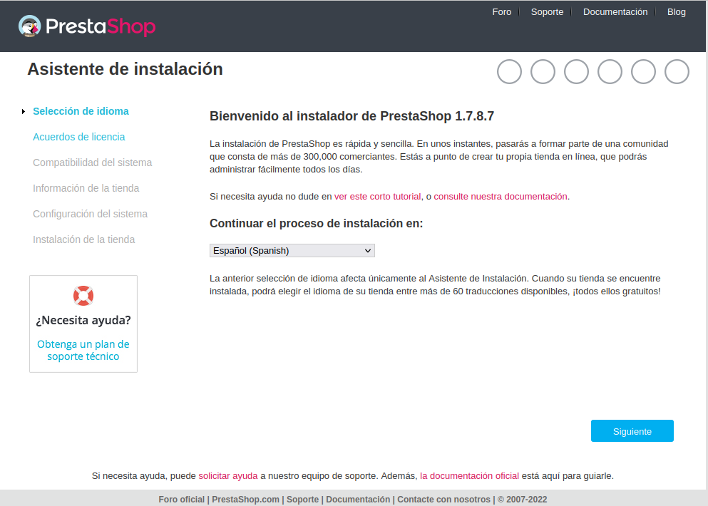
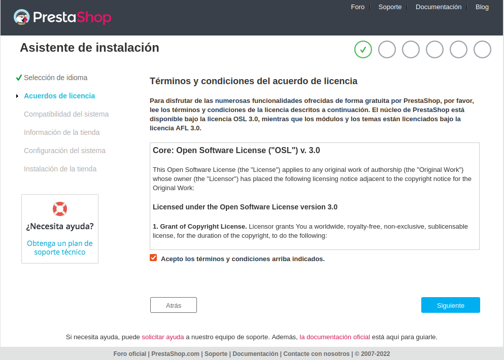
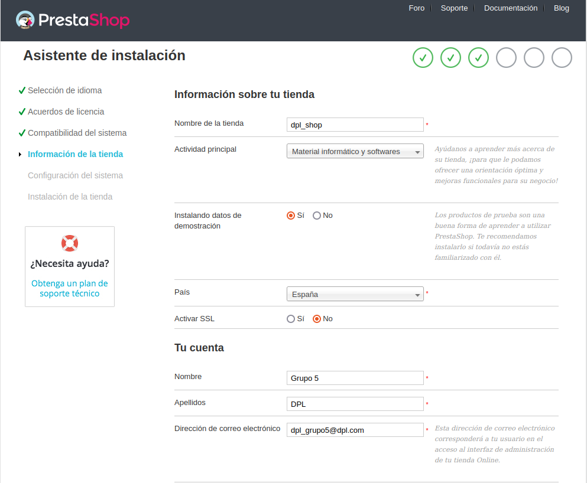
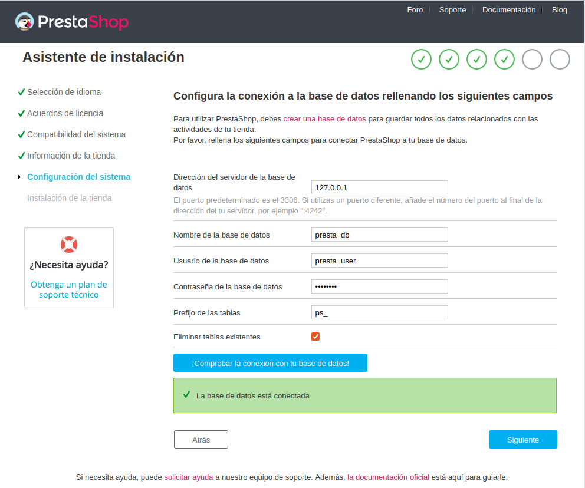
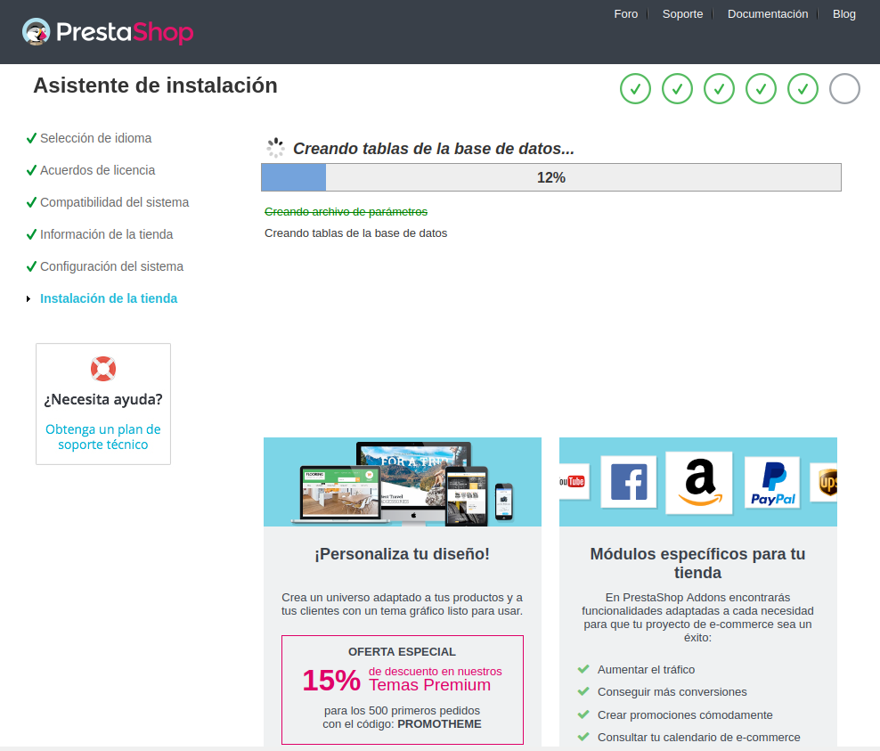
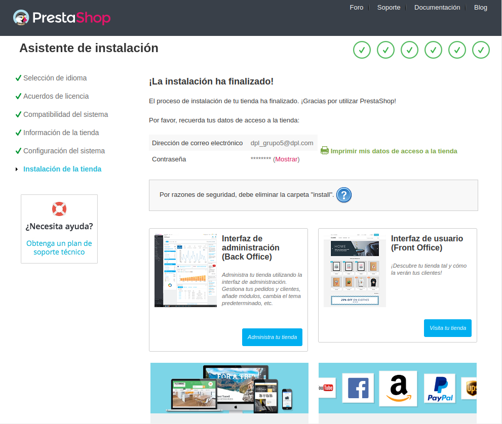

¿Qué es PrestaShop?
Definición
PrestaShop es un Sistema de Gestión de Contenidos (CMS) gratuito para desarrollar tiendas online.
Su crecimiento se apoya en su comunidad, que han creado una gran cantidad de módulos para agregar nuevas funcionalidades y plantillas para definir el aspecto visual de la tienda.
PrestaShop está desarrollado bajo licencia Open Source, por lo que se puede utilizar de forma gratuita en cualquier proyecto comercial. Además, incluye de serie unas 600 funcionalidades, que cubren las necesidades principales que todo comercio electrónico necesita, entre las que podemos destacar:
- Gestión de pedidos
- Gestión de clientes
- Gestión de productos
- Gestión de descuentos en masa y generación de cupones de descuento
- Gestión de stock
- Configuración de grupos de clientes con diferentes tarifas
- Gestión de transportistas por peso o por precio
- Integración con la mayoría de pasarelas de pago (Redsys, PayPal, Stripe, Bizum, etc.)
¿Cuándo es recomendable usarlo?
Según datos de la propia PrestaShop, cuentan con más de 300.000 tiendas online en todo el mundo de las cuales unas 60.000 son españolas.
Como podemos ver, el mercado en España se encuentra repartido prácticamente entre WooCommerce y PrestaShop, aunque a nivel internacional la cosa cambia bastante, quedando relegado PrestaShop a un 4º lugar.
Con PrestaShop se puede afrontar cualquier proyecto de tienda online, aunque está más enfocado para cubrir tiendas online de tamaño mediano-alto o con opción multitienda. Por lo tanto, podríamos concluir que el mercado ideal con PrestaShop serían tiendas online de tamaño mediano-alto ubicadas en España.
Beneficios
- Es sencillo de utilizar. Aunque cuenta con gran cantidad de opciones, PrestaShop es sencillo de usar y no es necesario disponer de conocimientos de programación web para poder crear una tienda online básica.
- Fácil de instalar. PrestaShop está desarrollada en PHP y MySQL, por tanto, casi cualquier hosting puede soportar su instalación.
- Alto grado de personalización. A través de su gran cantidad de módulos disponibles se pueden extender sus funciones. En cuanto al aspecto visual, se puede usar uno de los miles de temas que existen como base y personalizarlo posteriormente a tu gusto.
- Preparado para la internacionalización. PrestaShop viene por defecto con la opción multi-idioma que permite añadir cómodamente traducciones de los idiomas que necesitas, además es multi-moneda permitiendo hacer automáticamente el cambio entre unas divisas y otras.
- Gestión de impuestos y facturas. Permite definir tasas e impuestos según el país y por tipo de producto. Además, tenemos la opción de generar o no la factura tras la compra, así como facturas de abono en caso de devoluciones.
- Es seguro. En términos generales cuenta con un buen nivel de seguridad general y, en caso de detectarse posibles vulnerabilidades, su equipo genera parches de actualización rápidamente.
Requisitos
Generales
- Un sistema Ubuntu 20.04 LTS o Ubuntu 22.04 LTS
- Un entorno tipo LAMP (con PHP hasta la versión 7.4)
- El paquete unzip
- Un usuario con permisos de sudo
- Acceso a Internet
Instalación de Php 7.4
La actual versión de Prestashop requiere que tengamos PHP 7.4, sin embargo el PHP por defecto se instala en su última versión, por lo que debemos instalar esta versión también.
Lo primero será añadir un repositorio de paquetes de Ubuntu adicional, para ello ejecutamos los siguientes comandos:
1 apt install software-properties-common gnupg2 -y
2
3 # Repositorio con las versiones de PHP
4 add-apt-repository ppa:ondrej/php
5
6 # Instalamos el modulo apache de PHP 7.4
7 apt install libapache2-mod-php7.4 libapache2-mod-php
8 apt update
Instalamos PHP 7.4
1 apt-get install php7.4 php7.4-fpm php7.4-cli -y
Lo único que nos falta es cambiar la versión de PHP que ejecutará Ubuntu:
1 a2dismod php8.1
2 a2enmod php7.4
Cada vez que ejecutemos uno de estos comandos, será necesario realizar un restart de apache.
Si queremos ver la versión de php, y cambiarla (no la de Apache), podemos usar el siguiente comando:
1 update-alternatives --config php
Instalación
Descarga
Vamos a descargar PrestaShop para Ubuntu 20.04 LTS desde la página oficial de la aplicación, donde visitaremos la sección «Crear mi tienda» para obtener el paquete:
Será necesario crear una cuenta, aceptar la política de protección de datos y las condiciones generales de uso para que se inicie la descarga.
Aunque de forma alternativa también podemos hacernos con el paquete de instalación usando un comando:
1 wget https://download.prestashop.com/download/releases/prestashop_1.7.8.7.zip
Instalación en Apache
Lo primero que haremos será descomprimir el paquete de instalación en donde queramos, aunque es recomendable tener los ficheros de PrestaShop en /var/www.
1 unzip prestashop_1.7.8.7.zip -d /var/www/prestashop
Una vez lo tenemos descomprimido, cambiamos el propietario de dicha carpeta a el usuario que use dicho servicio web:
1 chown -R www-data: /var/www/prestashop/
Tendremos que configurar el servicio web para hacer accesible PrestaShop. Puedes integrar PrestaShop en el servicio web de Ubuntu 20.04 LTS de múltiples formas, ya sea como el sitio web por defecto, un servidor virtual independiente o, como haremos en este tutorial, como parte del sitio web por defecto.
- Activaremos el módulo Rewrite de Apache
1 a2enmod rewrite - Creamos una configuración de apache para PrestaShop
1 nano /etc/apache2/sites-available/prestashop.confLa configuración consistirá básicamente en establecer un alias, que en este caso será “/tienda”, y en permitir mediante una directiva AllowOverride el uso de archivos .htaccess
1 Alias /tienda /var/www/prestashop 2 3 <Directory /var/www/prestashop> 4 AllowOverride all 5 php_value memory_limit 512M 6 </Directory> - Guardamos el archivo, habilitamos el sitio y restablecemos Apache
1 a2ensite prestashop.conf 2 3 systemctl restart apache2 - Añadimos la nueva redireccion en el fichero hosts de el directorio /etc
1 ... 2 3 127.0.0.1 /tienda
Lo siguiente que debemos hacer es instalar las extensiones de PHP, en este caso especificando la versión, que en nuestro caso es 7.4.
1 apt install -y php7.4-curl php7.4-gd php7.4-intl php7.4-mbstring php7.4-xml php7.4-zip php7.4-pdo-mysql
Estas son las básicas, pero es recomendable instalar algunas más:
1 apt install -y php7.4-apcu php7.4-memcached php7.4-memcache
Solo nos queda configurar la base de datos para finalizar la instalación en el servidor. Lo primero es entrar en la linea de terminal de mysql:
1 mysql -u usuario -p
Una vez dentro creamos la base de datos.
1 CREATE DATABASE presta_db charset utf8mb4 collate utf8mb4_unicode_ci;
Seguidamente crearemos el usuario que interactue con dicha base de datos.
1 CREATE DATABASE presta_user@localhost IDENTIFIED BY 'password';
Esto cambiará un poco si tenemos MySQL 8:
1 CREATE DATABASE presta_user@localhost IDENTIFIED WITH mysql_native_password BY 'password';
Por último, le damos permisos en la base de datos al usuario creado.
1 GRANT ALL PRIVILEGES ON presta_db.* TO presta_user@localhost;
Instalación Web
El último paso de la instalación de PrestaShop en Ubuntu 20.04 LTS es precisamente lanzar el instalador web desde un navegador, para lo que añadiremos el alias que hemos configurado a la dirección de la máquina.
En nuestro caso la tienda es accesible desde localhost o la dirección ip 127.0.0.1, y hemos configurado el alias /tienda, por lo que accedemos con http://localhost/tienda como URL:
Pasos
-
Selección del Idioma
 -
Aceptar los términos de instalación
 -
La siguiente página sería la de comprobación de compatibilidad del sistema (si has seguido todos los pasos anteriores el instalador saltará directamente al siguiente paso)
-
Introducir información básica sobre la tienda y los datos del usuario administrador. También podrás elegir si quieres instalar o no datos de demostración para la nueva tienda, en nuestro caso asi lo haremos para partir con una tienda ya construida.
 -
Continuamos con la configuración de la conexión a la base de datos, podemos darle al botón de comprobar conexión para asegurarnos que todo va bien.
 -
Una vez hecho todo esto, comenzará el proceso de instalación
 -
Cuando haya acabado nos saldra lo siguiente:
 -
Un aviso nos informará de que debemos eliminar la carpeta de instalación, cosa que podemos hacer desde consola:
1 rm -rf /var/www/prestashop/install/
Una vez hemos acabado, podemos visitar de nuevo http://localhost/tienda, y nos aparecerá nuestro PrestaShop en funcionamiento.
Acceso al panel de Administración
Si queremos acceder al panel de administrador debemos ir a la url: http://localhost/tienda/admin, y escribir las credenciales en el formulario. Observa que el acceso al panel de administración cambia de una dirección terminada en /admin/ a una terminación tipo /adminXXXXXXXXX/, para que un usuario malicioso no pueda encontrar el acceso al panel de administración
Debemos guardar dicha url en un marcador, o donde queramos, para volver a acceder a dicho panel ya que no podremos volver a entrar desde /tienda/admin.
Login Panel de Administración
Panel de Administración
Configuración de Nuestra Tienda
Crear un Producto
Si le damos a empezar en el menú de la anterior pantalla, nos hará un breve tutorial, empezando por la creación de un producto.
Siguiendo el tutorial nos aparece la pestaña de creación de productos. En ella podemos agregar:
- Nombre de Producto
- Varias imágenes
- Caracteristícas
- Resumen
- Descripción
- Referencia del Producto
- Cantidad
- Precio
- Impuestos
- Categorias a la que pertenece
- Etc.
Debemos habilitar el producto recién creado para que aparezca en nuestra tienda.
Producto ya en la tienda
Logotipo e imágenes Corporativas
En la siguiente sección podemos cambiar el logotipo de la tienda, el logotipo del correo y el favicon de la página.
Añadir Nueva Página
Para añadir una nueva página iremos a la pestaña Diseño, y clicaremos en la opción páginas. Esto nos mostrará lo siguiente:
Aquí tenemos dos opciones, podemos crear una nueva categoría de página o crear una página nueva, le daremos a añadir nueva página.
Aquí nos salen diferentes opciones a configurar:
- Categoría
- Opciones de SEO
- URL
- Contenido de la página
- Etc.
En la zona inferior nos aparece un botón de previsualización, por si queremos ver como queda el resultado final.
Cambiar el Tema de la Tienda
Para añadir un tema podemos utilizar el gestor de Prestashop o agregar un tema descargado de internet. En este caso utilizaremos uno de internet gratuito (es importante saber que muchos de estos temas gratuitos te piden suscribirte, poner una tarjeta de crédito, compartirlo en redes sociales, etc).
Para añadir un tema descargado debemos clicar en diseño/Tema y Logotipo. Dentro de dicha pestaña pulsaremos en añadir nuevo tema.
Tenemos diferentes opciones para subir un tema:
- Importar desde tu ordenador.
- Importar desde url.
- Importar desde ftp.
Cabe resaltar que el fichero a subir debe ser un zip. Posiblemente el Zip que descarguemos tenga mas ficheros dentro, y necesitemos buscar entre esos ficheros el zip de instalación.
Es importante saber que puede darnos un fallo a la hora de subir el tema, ya que por defecto php soporta únicamente 2M de subida. Para cambiar eso debemos modificar el archivo php.ini de la versión PHP 7.4, que se encuentra en el directorio /etc/php/7.4/apache2.
Lo que debemos cambiar es lo siguiente:
1 upload_max_filesize tamaño (2M por defecto)
2
3 post_max_size tamaño
Una vez instalado nos saldrá como tema a seleccionar pero, dependiendo del tema, puede que nos de algún fallo ya que algunos requieren de módulos adicionales:
Ejemplo de fallo
Si esto ocurre podemos descargar los módulos correspondientes desde sus repositorios de github.
En la siguiente sección podemos descargar el módulo, en formato zip o tar.gz, nostros recomendamos usar el formato zip, es más sencillo de instalar.
Una vez descargado el módulo debemos comprobar que la carpeta dentro del zip sólo contenga el nombre del módulo, y que no venga con carácteres de más, porque nos fallará si este es el caso.
Carpeta con el nombre erróneo
Carpeta con el nombre correcto
Si todo ha ido el módulo se instalará de forma correcta. Una vez tengamos todos los módulos necesarios ya tendremos el tema seleccionado.